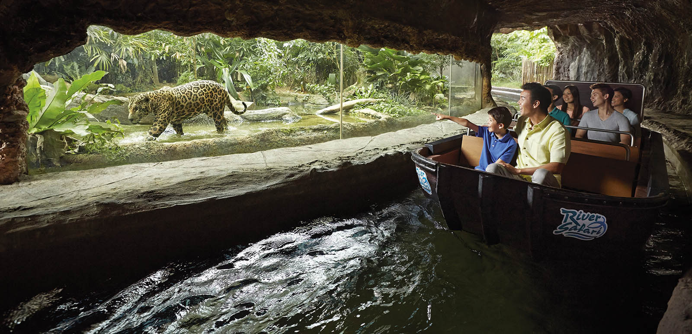
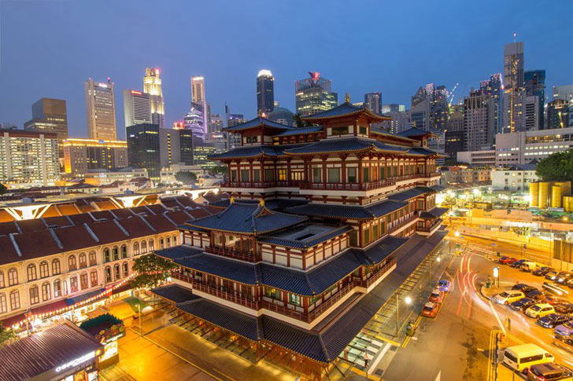

| Singapore Zoo | Marina Bay Sands SkyPark | Waterfront Promenade |
|---|---|---|
 |
 |
|
| The impressive Singapore Zoo is well-known around the world.Guests can attend interactive animal shows, go on tours and safaris, and feed some of the animals. | A trip to Marina Bay would certainly not be complete without a visit to the SkyPark Observation Deck.Offering a spectacular wine and dine experience, it's sure to be an unforgettable meal. | After soaking up the views from atop the SkyPark,head to the water for some more sightseeing.After that, watch the sun go down over the glorious waterfront. |
| Singapore Flyer | Gardens By the Bay | River Safari |
|---|---|---|
 |
 |
 |
| The breathtaking view aboard the Flyer promises an expansive view of the skyline, along with a brief glimpse of Malaysia and Indonesia from the top.I hope you will enjoy the panoramic views of Singapore aboard the Flyer and see the city in a whole new light. | Next, make your way to one what's considered to be one of the most unique tourist attractions in Singapore.You'll feel like you've stepped into a colorful, friendly, fantasy world in the Gardens By the Bay. | Nestled right in between the well-known Singapore Zoo and Night Safari, the River Safari is a river-themed zoo and aquarium.Get set to begin your journey alongside meandering rivers and enjoy the chance to view exotic animals. |
| Singapore Cable Car | Universal Studios Singapore | Wings of Time |
|---|---|---|
 |
||
| Spend your third day on the beloved Sentosa Island.Known for its breathtaking views between Faber Peak and Sentosa Island.On the Sentosa Line, fly over the jungle, sand, and sea; plus, catch views of the city's main attractions. | Thrill-seekers can have a ball of a time at Singapore’s Universal Studios, located on Sentosa Island.The Ultimate 3D Battle, Jurassic Park Rapids Adventure and many others. In addition, don’t miss out on the Hollywood Dreams Parade, a special holiday show. | Mesmerizing and captivating, the Wings of Time is Singapore’s award-winning outdoor night show.The show tells a contemporary tale of courage, mystery and magic.Sit back and get lost in this magical world as you journey across the fabric of time. |
| Singapore Botanic Gardens | Jurong Bird Park | Raffles City |
|---|---|---|
| Set up in a verdant landscape,the Singapore Botanic Gardens are definitely not to be missed during your visit to Singapore!There are several in-house cafes and activities that can easily occupy at least half your day, so plan accordingly. | Be prepared to experience the ultimate animal encounter at Singapore’s Jurong Bird Park!Hike to the waterfall aviary and witness a 30-meter tall waterfall, home to almost 600 birds.There are plenty of experiences that’ll sweep you off your feet at the Jurong Bird Park. | If you’re someone with a fine taste for luxury,this shopping center can bring your dreams to life.Find everything from a pin to piano under this roof!Soak up the atmosphere, grab a bite to eat,and do some shopping. |
| Singapore City Tours | Vivo City |
|---|---|
|  | |
| Choose from dozens of tours and explore the city's iconic hotspots and enticing neighborhoods with a professional, local guide. From tours of Little India and China Town to pub crawls and river cruises, experience just about anything. | Singapore’s largest retail and lifestyle destination, Vivo City Mall is famous amongst locals and tourists who want to hang out or spend some time socializing. Singapore’s largest mall has something for everyone. |
| Price List | |
|---|---|
| Numbers of people | Usual Price |
| Single | $3000 |
| Dual | $6000 |
| Triple | $9000 |
| Four and above | $2800 for each |